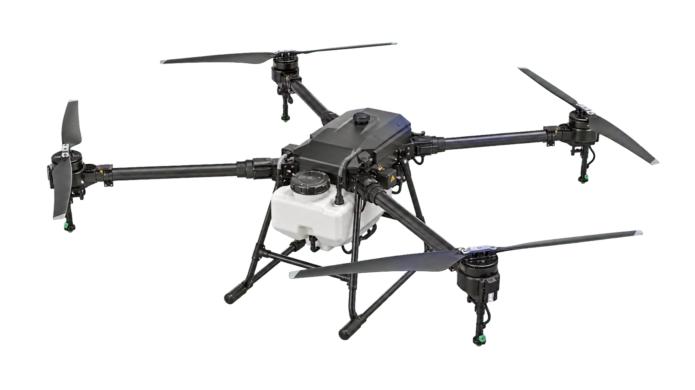
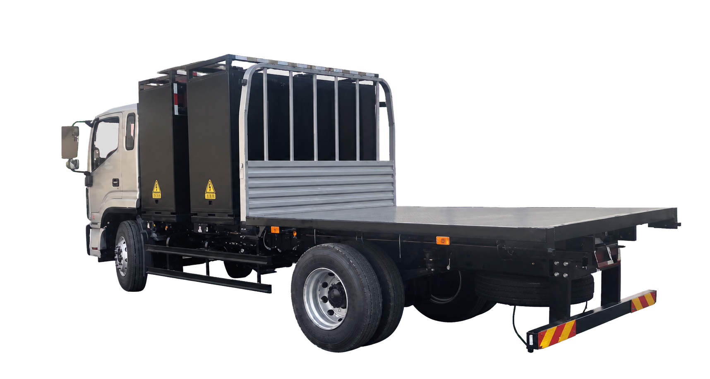

需求参数口径不一致
客户作业指标需要转换为功率、电量、保障时长等能源参数。
面向销售、方案与运营团队，将任务规模、作业周期、现场供电条件和辅助负载转化为统一的能源需求参数，并形成可复核的分级配置建议。

客户作业指标需要转换为功率、电量、保障时长等能源参数。
仅依据峰值功率选型，可能忽略日用电量、作业节拍与资产利用率。
车辆、运输、现场人员和资产占用成本需要统一核算；场景假设需由试点数据校准。
用于项目前期需求澄清和设备配置初判。默认参数均可修改；计算结果属于模型测算，不代表现场实测数据或正式商务报价。
六类方案按相对表现进行 1–5 级示例评估。点击方案名称可查看适用条件、主要优势与实施约束。
| 方案 | 初始投入友好度 | 部署灵活性 | 适用规模 | 低噪低排 | 容量利用率 | 运输友好度 | 连续保障 |
|---|---|---|---|---|---|---|---|
| 固定场站 | |||||||
| 中大型 | |||||||
| 小型 | |||||||
| 小型/临时 | |||||||
| 本次推荐 | 中型/连续 | ||||||
| 大型/长周期 |
根据任务规模、连续作业要求和运营方式，分别配置轻量化补能节点、模块化移动能源站和大型能源保障中心。
面向小规模临时任务，为弱网或短时离网场景提供现场功率补充。
根据峰值功率和日用电量配置模块容量，并支持多路充电与现场配电。
面向大规模、长周期或区域共享任务，配置大容量设备与多车循环调度。
产品图来自启源企业资料并进行透明底处理；页面展示用于方案沟通，具体选型仍需结合现场负载复核。

企业资料图 · 已抠图车储共用电池随车运输，可充可换，为现场充放电设备提供移动电源。
切换查看企业实施基础与首个试点的验证范围。
启源已具备面向影视、工地、车辆补能和油气田等场景的移动能源产品及运营能力。低空启能云在此基础上建立统一的需求参数、配置规则和试点数据闭环；现阶段不将其表述为成熟的无人机集群补能案例。
场景假设 / 模型测算 / 待试点验证